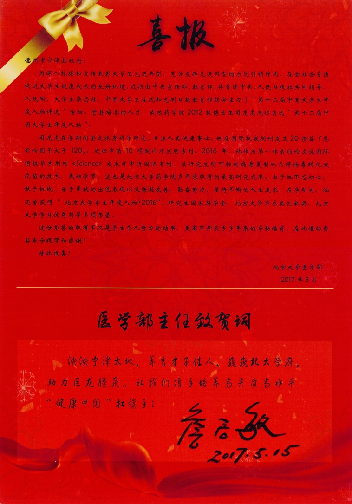

新闻动态
传递喜悦，携手共进——詹启敏主任向“第十二届中国大学生年度人物”司龙龙家长和家乡致贺

发给家长的喜报

发给家乡的喜报
我课题组2012级博士生司龙龙成功当选“第十二届大学生年度人物”后，喜讯和他的事迹在校园内颂传。当然，这荣誉的取得不仅是司龙龙同学个人努力的结果，更离不开家长的辛苦付出，离不开家乡的辛勤培育。为了更好地宣传司龙龙同学的先进事迹，充分发挥优秀学生的示范引领作用，在全社会营造奋发上进的良好氛围，同时向司龙龙同学家长和家乡分享喜讯，更好地携手合作为社会培养更多栋梁之才，医学部特向司龙龙同学家长、德州市宁津县政府发去喜报，詹启敏主任亲自题写贺词。
詹主任在德州市宁津县政府的贺词中写道：泱泱宁津大地，养育才子佳人；巍巍北大学府，助力巨龙腾飞。让我们携手培养高素质高水平“健康中国”扛旗手！同时，詹主任对司龙龙父母表示了祝贺和感谢：司龙龙于2012年以推荐免试方式进入北大医学部。感谢家长的培养与付出，同时祝贺您们，希望司龙龙未来的道路更加辉煌！
司龙龙同学得知学校专门向自己的父母和家乡发送喜报后，动情地说：“非常感谢詹主任和学校特意向我的父母、家乡报喜！能获得这项荣誉，我非常荣幸。在此，衷心感谢我的导师周德敏教授多年来给予我的培养；感谢药学院、国家重点实验室、北京大学医学部乃至北京大学这个实现无数学子梦想的舞台；感谢我的所有师兄弟姐妹和合作者的帮助和支持；感谢家人和亲朋好友的默默付出。这个荣誉更是属于你们的！”
同时，他以师兄的身份寄语师弟师妹们：作为国家的最高学府之一，北京大学是知识和智慧的殿堂，每一个学子都应该珍惜在此学习、锻炼的机会。在这里，你会发现无数为国家做出巨大贡献的优秀前辈和大师就在我们身边，他们为我们树立了北大人的榜样。作为新一代的北大人，我们应该脚踏实地、厚积薄发，秉承北大人的厚道与担当，追求人生路上的诗和远方！祝福每一个学子都有一个美好的未来！
这件事情也在同学中引起了热烈的讨论，同实验室的陈祎同学说：“龙龙师兄非常勤奋认真，注重科研创新，他获得诸多荣誉成果是一点一滴的努力换来的。”同学院的徐兴农同学也特别感慨，他说：“百善孝为先，对父母最大的孝顺就是给他们带去荣耀，让他们开心，龙龙师兄做到了！”大家纷纷表示，要以司龙龙师兄为榜样，忠于科研、敢于挑战、荣耀父母，为母校争光！
（医学部研究生工作部）
（转自北京大学医学部新闻网：http://www.bjmu.edu.cn/xxdt/189960.htm）